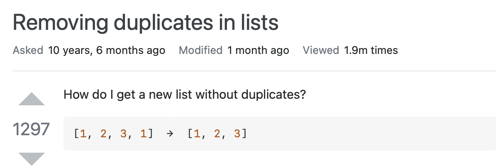

4. Kontrollstrukturen#
Bislang haben wir mit Code gearbeitet, der Zeile für Zeile von oben bis unten ausgeführt wird. Wirklich spannend wird es jetzt, da wir lernen, wie wir den Ablauf des Codes derart kontrollieren können, dass gewisse Codeteile nur unter bestimmten Bedingungen ausgeführt werden, oder aber gewisse Teile eine bestimmte Anzahl Mal wiederholt ausgeführt werden. Dazu gibt es Kontrollstrukturen in Python und zwar zwei verschiedene: Bedingte Anweisungen (auch „Fallunterscheidungen“ und engl. conditionals genannt) und Schleifen (engl. loops). Beiden sind wir auf dem Weg hierhin schon ein paar Mal begegnet.
Im Falle von bedingten Anweisungen werden Codeblöcke nur unter bestimmten Bedingungen ausgeführt, bei Schleifen hingegen werden Codeblöcke solange wiederholt ausgeführt, wie eine bestimmte Bedingung zutrifft. Wie bei Python üblich, steuern Einrückungen, welcher Teil des Codes von einer solchen Struktur kontrolliert wird.
Im Zusammenhang mit Bedingungen sind die beiden Boolschen Werte True und False relevant: Trifft die Bedingung, die die Ausführung eines Codeblocks kontrolliert, zu, dann nimmt sie den Boolschen Wert True an und der darunter eingerückte Anweisungskörper wird ausgeführt. Trifft die Bedingung nicht zu, dann nimmt sie den Boolschen Wert False an und der darunter eingerückte Anweisungskörper wird nicht ausgeführt, d.h. Python springt direkt zur Zeile nach der Einrückung und macht dort weiter.
4.1. Rekapitulation Operatoren#
Die Bedingungen ihrerseits werden mithilfe von Vergleichsoperatoren und logischen Operatoren definiert. Erstere rekapitulieren wir nochmal kurz, bevor wir letztere kennenlernen.
4.1.1. Vergleichsoperatoren#
Ein Vergleichsoperator vergleicht den Wert, der links vom Operator steht, mit dem Wert zu seiner Rechten. Ergebnis ist immer ein Boolscher Wert, entweder True oder False.
==: ist gleich!=: ist ungleich<: kleiner>: größer<=: kleiner gleich>=: größer gleich
Damit können wir z.B. überprüfen, ob 20 kleiner 100 ist. Da dies zutrifft, erhalten wir True zurück.
print(20 < 100)
True
4.1.2. Logische Operatoren#
Logische Operatoren ermöglichen es nun, Vergleiche miteinander zu verknüpfen. Das sieht dann z.B. so aus:
small = 20
big = 100
print(small < big and big > small)
True
Hier werden zwei Vergleich durch den logischen Operator and verknüpft. Python rechnet erst die beiden einzelnen Vergleiche aus, die in beiden Fällen True ergeben (small ist kleiner als big und das Umgekehrte ist ebenfalls wahr). Danach rechnet es die Verknüpfung aus. Bei and kommt True raus, einzig wenn alle miteinander verknüpften Vergleiche einzeln auch True ergeben.
Daneben gibt es den logischen Operator or, der True immer dann ergibt, wenn mindestens einer der miteinander verknüpften Vergleiche einzeln True ergibt:
print(small == big or big > small)
True
Der erste Vergleich ergibt natürlich False, denn die Werte von small und big sind nicht gleich. Der zweite Vergleich ergibt immer noch True, weswegen die Verknüpfung durch or ebenfalls True ergibt.
Daraus ergibt sich folgende Wahrheitstabelle für die Verknüpfung zweier Vergleiche (es können aber beliebig viele Vergleiche miteinander verknüpft werden). x und y stehen jeweils für einen ausgerechneten Vergleich:
x |
y |
x and y |
x or y |
|---|---|---|---|
True |
True |
True |
True |
True |
False |
False |
True |
False |
True |
False |
True |
False |
False |
False |
False |
Wann immer Du Dir unsicher bist, wie and und or funktionieren, kannst Du in dieser Tabelle nachschauen.
Darüber hinaus gibt es noch den logischen Operator not, der ganz einfach den ihm folgenden Ausdruck negiert, etwa:
print(not small > big)
True
Dies ergibt True, denn small ist nicht größer als big. not mag in diesem Beispiel wenig hilfreich erscheinen, im Zusammenhang mit bedingten Anweisungen, die wir nachher kennenlernen, kann not aber sehr praktisch sein.
4.2. 🔧 Anwendungsfall: Einen Kalender erstellen#
Erinnerst Du Dich an die Übung im ersten Notebook, wo wir die sieben Wochentage für alle 52 Wochen ausgegeben haben? Viel praktischer wäre es, wenn wir zusätzlich auch den Tag und Monat für jedes Datum ausgeben lassen könnten, also etwa so:
Samstag, 1. Januar 2022
Sonntag, 2. Januar 2022
Montag, 3. Januar 2022
Dazu müssen wir die Ausgabe dynamisch kontrollieren und mit welchen Techniken das möglich ist, lernen wir in diesem Notebook. Überlege Dir schon an dieser Stelle, wie Du das Problem angehen könntest, sodass Du im Folgenden auf mögliche Lösungswege aufmerksam wirst. 💡
4.3. Bedingte Anweisungen#
Wir widmen uns als Erstes den bedingten Anweisungen und definieren dafür einen simplen string. Führe wie immer die Zelle aus, um sentence zu initialisieren.
sentence = "Der morgige Tag wird schön."
Eine bedingte Anweisung wird mit if eingeleitet, z.B.:
if sentence.startswith("Der"):
print("Der Satz fängt mit einem Artikel im Maskulinum an.")
Der Satz fängt mit einem Artikel im Maskulinum an.
Natürlichsprachlich formuliert liest sich der obige Code: „Wenn der Satz mit ‚Der‘ anfängt, dann geben wir ‚…‘ zurück“.
Übrigens haben wir gerade eine sog. string-Methode kennengelernt, nämlich startswith, die überprüft, ob ein string (hier: sentence) mit der in der Klammer definierten Zeichenkette beginnt. Diese und andere Methoden besprechen wir im Detail im nächsten Notebook.
Wie gesagt, bei bedingten Anweisungen geht es immer um True oder False. Die obige Bedingung ist eigentlich abgekürzt formuliert. Ausformuliert lautet sie:
if sentence.startswith("Der") == True:
print("Der Satz fängt mit einem Artikel im Maskulinum an.")
Der Satz fängt mit einem Artikel im Maskulinum an.
Nur wenn die angegebene Bedingung zutrifft (also den Wert True annimmt), wird der im Anweisungskörper geschriebene Code ausgeführt. In der Praxis verwendet man stets die Abkürzung, die, wie oben gezeigt, auch natürlichsprachlich intuitiv Sinn ergibt.
Nun ändern wir den Satz (genauer gesagt: wir referenzieren mit der Variablen sentence ein neues Objekt, das alte Objekt verliert seine Referenz):
sentence = "Die morgige Nacht wird schön."
Verwenden wir nun die gleiche bedingte Anweisung, so geschieht nichts, denn sie ergibt False und folglich wird die Anweisung im Körper nicht ausgeführt. Wir brauchen also eine zweite Bedingung, zusätzlich zur ersten, die wir beibehalten möchten:
if sentence.startswith("Der"):
print("Der Satz fängt mit einem Artikel im Maskulinum an.")
if sentence.startswith("Die"):
print("Der Satz fängt mit einem Artikel im Femininum an.")
Der Satz fängt mit einem Artikel im Femininum an.
Was wir hier gemacht haben, ist allerdings ineffizient, denn angenommen, der Satz würde immer noch mit „Der“ anfangen, dann träfe die erste Bedingung zu. Python würde nichtsdestotrotz im Anschluß die zweite Bedingung prüfen, die aber nicht mehr zutreffen kann. Anstatt eines zweiten if-Statements können wir das Statement elif (kurz für else if) benutzen, das die Bedingung nur prüft, falls nicht bereits die Bedingung davor zutraf:
if sentence.startswith("Der"):
print("Der Satz fängt mit einem Artikel im Maskulinum an.")
elif sentence.startswith("Die"):
print("Der Satz fängt mit einem Artikel im Femininum an.")
Der Satz fängt mit einem Artikel im Femininum an.
Um das dritte und letzte Statement für bedingte Anweisungen, else, einzuführen, verändern wir den Satz noch einmal:
sentence = "Das morgige Wetter wird schön."
Unter else fällt alles, das keine der vorangehenden Bedingungen erfüllt, sprich die Anweisung unter else wird ausgeführt, wenn alle vorherigen bedingten Anweisungen False ergaben:
if sentence.startswith("Der"):
print("Der Satz fängt mit einem Artikel im Maskulinum an.")
elif sentence.startswith("Die"):
print("Der Satz fängt mit einem Artikel im Femininum an.")
else:
print("Der Satz fängt mit einem Artikel im Neutrum an.")
Der Satz fängt mit einem Artikel im Neutrum an.
Diese Verkettung von Bedingungen kann nun beliebig erweitert werden, z.B. wie folgt:
sentence = "Ein morgiger Tag wird schön."
if sentence.startswith("Der"):
print("Der Satz fängt mit einem Artikel im Maskulinum an.")
elif sentence.startswith("Die"):
print("Der Satz fängt mit einem Artikel im Femininum an.")
elif sentence.startswith("Das"):
print("Der Satz fängt mit einem Artikel im Neutrum an.")
else:
print("Damit bin ich überfordert.")
Damit bin ich überfordert.
Wichtig: Es wird immer nur einer der Codeblöcke ausgeführt: sobald entweder das erste if-Statement oder eines der folgenden elif-Statements True ergibt, wird der darunter eingerückte Codeblock ausgeführt und alle weiteren elif-Statements sowie das finale else-Statement werden gar nicht mehr evaluiert. Nur wenn keines der Statements vor dem finalen else-Statement zutrifft, wird der darunter eingerückte Codeblock ausgeführt.
✏️ Übung 1: Simplifiziere den folgenden Code auf zwei verschiedene Arten, einmal unter Einsatz des logischen Operators and, einmal mithilfe von or. Das Resultat Deiner Simplifizierung sollte sein, dass der Code nur noch um eine Ebene eingerückt ist.
#In diese Zelle kannst Du den Code zur Übung schreiben.
age = 28
if age > 18:
if age <= 65:
print("Mensch arbeitet vermutlich")
else:
print("Mensch arbeitet vermutlich nicht")
Mensch arbeitet vermutlich
✏️ Übung 2: Mit größe soll die Körpergröße eines erwachsenen Menschen in Zentimetern referenziert werden. Schreibe einen Code, der je nach dem, wie groß größe ist, auf sehr brachiale Art über die Körpergröße Folgendes verlauten lässt:
"Ein großer Mensch", wenngrößegrößer als 180cm ist"Ein durchschnittlich großer Mensch", wenngrößezwischen 170cm und 180cm ist"Ein kleiner Mensch", wenngrößekleiner als 170cm ist
Der Code soll zudem überprüfen, ob die Zahl in größe sinnvoll ist. Sie muss dafür mindestens dreistellig sein, darf aber auch nicht mehr als 200 betragen. Ist dies nicht der Fall, soll eine Fehlermeldung zurückgegeben werden.
Wenn Du fertig bist, probiere Deinen Code aus, indem Du verschiedene Werte bei größe einsetzt.
#In diese Zelle kannst Du den Code zur Übung schreiben.
größe = 182
In der letzten Übung ist Dir vermutlich bewusst geworden, dass die Reihenfolge, in der bedingte Anweisungen formuliert werden, sehr zentral ist. In der Musterlösung haben wir uns den Umstand zunutze gemacht, dass immer nur eine Bedingung innerhalb einer Sequenz von if-elif-else-Statements wahr sein kann (alles andere wäre ja auch unlogisch). Entsprechend mussten wir in der zweiten bedingten Anweisung (elif größe >= 170:) nicht mehr überprüfen, ob größe nicht bloß größer gleich 170, sondern auch kleiner 180 ist. Letztere Teilbedingung für den Fall „durchschnittlich groß“ zu überprüfen war überflüßig, denn sie kann gar nicht mehr wahr sein (wäre sie wahr, so hätte die erste bedingte Anweisung True ergeben und Python wäre nie zur zweiten bedingten Anweisung vorgedrungen). Diese Logik trifft natürlich auch umgekehrt zu, falls Du in Deiner Lösung die Bedingungen von unten her überprüft hast.
Nun wissen wir alles Relevante über bedingte Anweisungen. Kommen wir zu den Schleifen.
4.4. Schleifen (Loops)#
Es gibt zwei Arten von Schleifen in Python:
for-Schleifen (engl. for-loops)while-Schleifen (engl. while-loops)
4.4.1. for-Schleifen#
for-Schleifen werden zum Ausgeben der einzelnen Elemente eines iterierbaren Objekts benutzt (vgl. Iterierbarkeit im zweiten Notebook). Ein Element nach dem anderen wird einzeln ausgegeben, bis das Objekt aufgebraucht (engl. exhausted) ist. Die Syntax lautet:
for element in iterable_object:
element ist wie bereits erwähnt eine Variable für das einzelne Element bei der Iteration über iterable_object und kann beliebig (aber bitte sprechend) benannt werden. Diese Variable wird dann im Anweisungskörper wiederverwendet, etwa um die Elemente nacheinander auszugeben (Beispiel für Liste unten), eine Bedingung an ihnen zu überprüfen (Beispiel für dictionary unten) oder um sie zu manipulieren (siehe viertes Notebook).
Unten finden sich Beispiele für for-Schleifen über Listen, dictionaries und strings:
days = ["Montag", "Dienstag", "Mittwoch", "Donnerstag", "Freitag", "Samstag", "Sonntag"]
capitals = {"Deutschland": "Berlin", "Österreich": "Wien", "Schweiz": "Bern"}
alphabet = "abcdefghijklmnopqrstuvwxyz"
for day in days:
print(day)
print("\n")
#wie genau die Iteration bei dictionaries funktioniert, lernen wir im nächsten Notebook
for key, value in capitals.items():
print(value, "ist die Hauptstadt des folgenden Landes:", key)
if value == "Bern":
print("(Nicht ganz wahr, die Schweiz hat de jure keine Hauptstadt, vgl. https://de.wikipedia.org/wiki/Schweiz)")
print("\n")
i = 1
for letter in alphabet:
print("Der Buchstabe", i, "im deutschen Alphabet ist:", letter)
i += 1
Montag
Dienstag
Mittwoch
Donnerstag
Freitag
Samstag
Sonntag
Berlin ist die Hauptstadt des folgenden Landes: Deutschland
Wien ist die Hauptstadt des folgenden Landes: Österreich
Bern ist die Hauptstadt des folgenden Landes: Schweiz
(Nicht ganz wahr, die Schweiz hat de jure keine Hauptstadt, vgl. https://de.wikipedia.org/wiki/Schweiz)
Der Buchstabe 1 im deutschen Alphabet ist: a
Der Buchstabe 2 im deutschen Alphabet ist: b
Der Buchstabe 3 im deutschen Alphabet ist: c
Der Buchstabe 4 im deutschen Alphabet ist: d
Der Buchstabe 5 im deutschen Alphabet ist: e
Der Buchstabe 6 im deutschen Alphabet ist: f
Der Buchstabe 7 im deutschen Alphabet ist: g
Der Buchstabe 8 im deutschen Alphabet ist: h
Der Buchstabe 9 im deutschen Alphabet ist: i
Der Buchstabe 10 im deutschen Alphabet ist: j
Der Buchstabe 11 im deutschen Alphabet ist: k
Der Buchstabe 12 im deutschen Alphabet ist: l
Der Buchstabe 13 im deutschen Alphabet ist: m
Der Buchstabe 14 im deutschen Alphabet ist: n
Der Buchstabe 15 im deutschen Alphabet ist: o
Der Buchstabe 16 im deutschen Alphabet ist: p
Der Buchstabe 17 im deutschen Alphabet ist: q
Der Buchstabe 18 im deutschen Alphabet ist: r
Der Buchstabe 19 im deutschen Alphabet ist: s
Der Buchstabe 20 im deutschen Alphabet ist: t
Der Buchstabe 21 im deutschen Alphabet ist: u
Der Buchstabe 22 im deutschen Alphabet ist: v
Der Buchstabe 23 im deutschen Alphabet ist: w
Der Buchstabe 24 im deutschen Alphabet ist: x
Der Buchstabe 25 im deutschen Alphabet ist: y
Der Buchstabe 26 im deutschen Alphabet ist: z
Im letzten Beispiel haben wir außerhalb der Schleife einen sog. Zähler (i) definiert, der bei jeder Iteration um 1 erhöht wird. Den Zähler selbst haben wir dann im print-Statement eingesetzt.
Zu diesem Zweck können wir auch die range-Funktion benutzen, sie hat folgende Syntax:
range(start, end, step)
Die range-Funktion ermöglicht es, von der als start angegebenen Zahl zur (aber nicht inklusive der) als end angegebenen Zahl zu iterieren, optional mit einem Schritt (step) > 1 (Standard ist 1), z.B. 2, wobei dann von start aus jede zweite Zahl übersprungen wird. In unserem Beispiel wird i in jedem Durchgang um 1 erhöht, ausgehend von 0 und bis und mit 25 (da end nicht inklusive ist!):
for i in range(0,26,1):
print("Der Buchstabe", i+1, "im deutschen Alphabet ist:", alphabet[i])
Der Buchstabe 1 im deutschen Alphabet ist: a
Der Buchstabe 2 im deutschen Alphabet ist: b
Der Buchstabe 3 im deutschen Alphabet ist: c
Der Buchstabe 4 im deutschen Alphabet ist: d
Der Buchstabe 5 im deutschen Alphabet ist: e
Der Buchstabe 6 im deutschen Alphabet ist: f
Der Buchstabe 7 im deutschen Alphabet ist: g
Der Buchstabe 8 im deutschen Alphabet ist: h
Der Buchstabe 9 im deutschen Alphabet ist: i
Der Buchstabe 10 im deutschen Alphabet ist: j
Der Buchstabe 11 im deutschen Alphabet ist: k
Der Buchstabe 12 im deutschen Alphabet ist: l
Der Buchstabe 13 im deutschen Alphabet ist: m
Der Buchstabe 14 im deutschen Alphabet ist: n
Der Buchstabe 15 im deutschen Alphabet ist: o
Der Buchstabe 16 im deutschen Alphabet ist: p
Der Buchstabe 17 im deutschen Alphabet ist: q
Der Buchstabe 18 im deutschen Alphabet ist: r
Der Buchstabe 19 im deutschen Alphabet ist: s
Der Buchstabe 20 im deutschen Alphabet ist: t
Der Buchstabe 21 im deutschen Alphabet ist: u
Der Buchstabe 22 im deutschen Alphabet ist: v
Der Buchstabe 23 im deutschen Alphabet ist: w
Der Buchstabe 24 im deutschen Alphabet ist: x
Der Buchstabe 25 im deutschen Alphabet ist: y
Der Buchstabe 26 im deutschen Alphabet ist: z
Achtung: Wir iterieren nun nicht mehr wie oben über die Zeichenkette alphabet direkt, deshalb müssen wir im Schleifenkörper den jeweiligen Buchstaben in alphabet über Indexing „ansprechen“. Da Indizes bei 0 beginnen, iterieren wir über eine range von 0 bis 25 anstatt von 1 bis 26. Für die natürlichsprachliche Zahl im print-Befehl erhöhen wir i um 1 (schließlich gibt es keinen nullten Buchstaben).
0 für start sowie 1 für step sind übrigens die Standardwerte bei der range-Funktion, d.h. es reicht, end zu definieren:
for i in range(26):
print("Der Buchstabe", i+1, "im deutschen Alphabet ist:", alphabet[i])
Der Buchstabe 1 im deutschen Alphabet ist: a
Der Buchstabe 2 im deutschen Alphabet ist: b
Der Buchstabe 3 im deutschen Alphabet ist: c
Der Buchstabe 4 im deutschen Alphabet ist: d
Der Buchstabe 5 im deutschen Alphabet ist: e
Der Buchstabe 6 im deutschen Alphabet ist: f
Der Buchstabe 7 im deutschen Alphabet ist: g
Der Buchstabe 8 im deutschen Alphabet ist: h
Der Buchstabe 9 im deutschen Alphabet ist: i
Der Buchstabe 10 im deutschen Alphabet ist: j
Der Buchstabe 11 im deutschen Alphabet ist: k
Der Buchstabe 12 im deutschen Alphabet ist: l
Der Buchstabe 13 im deutschen Alphabet ist: m
Der Buchstabe 14 im deutschen Alphabet ist: n
Der Buchstabe 15 im deutschen Alphabet ist: o
Der Buchstabe 16 im deutschen Alphabet ist: p
Der Buchstabe 17 im deutschen Alphabet ist: q
Der Buchstabe 18 im deutschen Alphabet ist: r
Der Buchstabe 19 im deutschen Alphabet ist: s
Der Buchstabe 20 im deutschen Alphabet ist: t
Der Buchstabe 21 im deutschen Alphabet ist: u
Der Buchstabe 22 im deutschen Alphabet ist: v
Der Buchstabe 23 im deutschen Alphabet ist: w
Der Buchstabe 24 im deutschen Alphabet ist: x
Der Buchstabe 25 im deutschen Alphabet ist: y
Der Buchstabe 26 im deutschen Alphabet ist: z
Weiter ist es reine Konvention, i als Variable bei range-Funktionen in for-Schleifen zu benutzen, es ist aber kein syntaktisches Muss.
Zur Veranschaulichung des step-Parameters, geben wir unten nur jeweils den dritten Buchstaben aus. Außerdem ersetzen wir den end-Parameter durch die Länge von alphabet:
for i in range(0, len(alphabet), 3):
print(alphabet[i])
a
d
g
j
m
p
s
v
y
In diesem Beispiel ist uns natürlich klar, dass das deutsche Alphabet 26 Buchstaben hat, in anderen Fällen ist uns die Länge eines Objekts aber vielleicht nicht bekannt. Aber selbst hier macht es Sinn, die Zahl 26 nicht zu „hardcoden“, es könnte ja sein, dass wir die Variable alphabet überschreiben und „ä, ö, ü“ anhängen. Ganz grundsätzlich sollte man so wenig wie möglich hardcoden, um den Code robust gegenüber späteren Veränderungen zu machen.
Die Verwendung der range-Funktion innerhalb einer for-Schleife macht verglichen mit der direkten Iteration über ein Objekt immer dann Sinn, wenn wir nur über bestimmte Elemente iterieren wollen (durch Modifikation von start, end und step) sowie, wenn wir innerhalb des Schleifenkörpers zusätzlich einen Zähler einsetzen wollen (etwa in den print-Befehlen oben).
✏️ Übung 3: Im Isländischen setzen sich Nachnamen aus dem Vornamen eines Elternteils (traditionell, aber nicht immer, des Vaters) und der binären Bezeichnung „son“ bzw. „dottir“ zusammen (i.d.R. mit Genitiv-s dazwischen). „Johannsdottir“ ist also z.B. die Tochter von Johann. Lasse Dir für jeden Namen auf surnames ausgeben, ob es sich um eine Person vermutlich isländischer Abstammung handelt, oder nicht. Wenn ja, lasse Dir zudem ausgeben, ob es sich aufgrund des Nachnamens um eine Frau oder einen Mann handelt.
In der Ausgabe sollte der betreffende Name vorkommen, also z.B. für einen nicht-isländischen Namen: Mensch Müller kommt vermutlich nicht aus Island.
In der bedingten Anweisung kannst Du das Pendant zum bereits bekannten startswith, nämlich endswith benutzen, das für einen string überprüft, ob er mit der in Klammern angegebenen Zeichenkette endet oder nicht. "string".endswith("g") überprüft etwa, ob „string“ mit „g“ endet. Wie immer kannst Du anstatt der Zeichenketten auch Variablen verwenden, die einen string referenzieren.
#In diese Zelle kannst Du den Code zur Übung schreiben.
surnames = ["Jonsdottir", "Müller", "Johannsson", "Einarsdottir", "Fischer", "Suarez", "Johannsdottir"]
4.4.2. Exkurs: Trial-and-error-Coding#
Unsere Codes werden zunehmend komplexer: In der letzten Übung hast Du etwa eine Schleife so wie mehrere bedingte Anweisungen verwendet. Wie wir ganz am Anfang im Video zu algorithmischem Denken gelernt haben, ist es wichtig, sich stets zu überlegen, in welche einzelnen Schritte ein Problem zerlegt werden kann, bevor man loslegt. Die Bedeutung dieser Herangehensweise nimmt mit zunehmender Komplexität der Aufgaben natürlich zu.
Die einzelnen Schritte jedoch löst man dann meistens durch „trial and error“. Oft hat man eine Idee, wie man einen Schritt lösen kann, probiert es aus und schaut dann, ob der Code das tut, was man erwartet. Manchmal klappt’s, manchmal nicht.
Konkret heißt das für Dich: führe Deinen Code immer wieder aus, lasse Dir einzelne Zwischenschritte über print ausgeben und taste Dich so (Zwischen-)Schritt für (Zwischen-)Schritt an die Lösung heran.
Führe die folgende Zelle aus, um ein Video zu Trial-and-error-Coding einzubetten oder schaue dir das Video bei YouTube an.
Show code cell source
#Führe diese Zelle aus, um das Video einzubetten
from IPython.display import YouTubeVideo
YouTubeVideo('cP7Jwe7HO10')
#der Code aus dem Video
customers = {"corporate": [{"Benzo Corp.": {"address": "Hampton Drive", "phone": 9332783746, "contact": ["Smith, Adrian", "Gullivan, Jane"]}},
{"Solar Ltd.": {"address": None, "phone": 3947473847, "contact": ["Bergh, Donald", "Merriot, Barbara"]}},
{"Zoalie Corp.": {"address": "Hampton Drive", "phone": 9338473849, "contact": ["Fink, Hugh"]}}],
"public": [{"Alazona State Agency": {"address": "Main Road", "phone": 8374829383, "contact": None}},
{"South Kentucky Gov.": {"address": "Union Square", "phone": 8374837282, "contact": ["Ferguson, Mary", "Lewinsky, Robert", "Pitt, Margareth"]}}],
"private": [{"Berghain, Anne": {"address": "Milton Road", "phone": 9334828189}}]}
customers_local = []
for key, value in customers.items():
#print(key, value, "\n")
for customer in customers[key]:
#print(customer)
for name, metadata in customer.items():
#print(metadata["phone"], "\n")
if str(metadata["phone"]).startswith("933"):
#print(metadata["phone"])
customers_local.append(name)
print(customers_local)
['Benzo Corp.', 'Zoalie Corp.', 'Berghain, Anne']
4.4.3. while-Schleifen#
Neben for-Schleifen gibt es while-Schleifen. Sie führen den in ihrem Anweisungskörper definierten Codeblock solange aus, wie die im Anweisungskopf definierte Bedingung zutrifft. Um dies zu veranschaulichen, bemühen wir noch mal das Alphabetbeispiel mit dem Zähler von oben:
i = 0
while i < len(alphabet):
print("Der Buchstabe", i+1, "im deutschen Alphabet ist:", alphabet[i])
i += 1
Der Buchstabe 1 im deutschen Alphabet ist: a
Der Buchstabe 2 im deutschen Alphabet ist: b
Der Buchstabe 3 im deutschen Alphabet ist: c
Der Buchstabe 4 im deutschen Alphabet ist: d
Der Buchstabe 5 im deutschen Alphabet ist: e
Der Buchstabe 6 im deutschen Alphabet ist: f
Der Buchstabe 7 im deutschen Alphabet ist: g
Der Buchstabe 8 im deutschen Alphabet ist: h
Der Buchstabe 9 im deutschen Alphabet ist: i
Der Buchstabe 10 im deutschen Alphabet ist: j
Der Buchstabe 11 im deutschen Alphabet ist: k
Der Buchstabe 12 im deutschen Alphabet ist: l
Der Buchstabe 13 im deutschen Alphabet ist: m
Der Buchstabe 14 im deutschen Alphabet ist: n
Der Buchstabe 15 im deutschen Alphabet ist: o
Der Buchstabe 16 im deutschen Alphabet ist: p
Der Buchstabe 17 im deutschen Alphabet ist: q
Der Buchstabe 18 im deutschen Alphabet ist: r
Der Buchstabe 19 im deutschen Alphabet ist: s
Der Buchstabe 20 im deutschen Alphabet ist: t
Der Buchstabe 21 im deutschen Alphabet ist: u
Der Buchstabe 22 im deutschen Alphabet ist: v
Der Buchstabe 23 im deutschen Alphabet ist: w
Der Buchstabe 24 im deutschen Alphabet ist: x
Der Buchstabe 25 im deutschen Alphabet ist: y
Der Buchstabe 26 im deutschen Alphabet ist: z
Die Verwendung von while mit einem Zähler ist eine von zwei gängingen Verwendungsweisen von while-Schleifen. Wir verwenden sie, wenn wir von vornerein wissen, wann die Schleife nicht mehr ausgeführt werden soll (in diesem Beispiel, wenn i gleich mit der Länge von alphabet ist).
Es gibt aber auch Situationen, wo wir nicht von Anfang an wissen, wie oft eine Schleife wiederholt werden soll. Ein Beispiel wäre ein Ratespiel mit User-Input, das so oft wiederholt werden soll, bis die Userin die Antwort errät. Für User-Input gibt es die input-Funktion, die wir im Code unten einfach mal benutzen, ohne sie im Detail einzuführen.
Diese Schleife soll also ganz grundsätzlich unendlich oft wiederholt werden. Theoretisch ist es ja möglich, dass die Userin unedlich oft falsch rät. Dafür schreiben wir im Schleifenkopf while True, eigentlich eine Kurzform für while True == True, was also immer zutrifft und die Schleife endlos laufen lässt.
Nun brauchen wir zusätzlich das Statement break, das wir innerhalb des Schleifenkörpers platzieren können (in unserem Beispiel, in dem Fall, sobald die Userin richtig rät). Sobald Python zu diesem Statement gelangt, wird die Schleife endgültig abgebrochen. Das sieht dann wie im folgenden Code aus.
Die User:innenrolle übernimmst übrigens Du, wenn Du diese Zelle ausführst. 😉 Deine Antwort kannst Du direkt im Anschluß an die Frage eingeben und mit Enter abschicken. Eventuell musst Du erst ins Antwortfeld unter der Frage klicken, sodass der Cursor blinkt.
while True:
x = int(input("Wie viele Arme hat ein Oktopus? Gib bitte eine Zahl an.\n"))
if x < 8:
print("Falsch, es sind mehr.")
elif x == 8:
print("Ganz richtig!")
break
else:
print("Nein, das sind zu viele.")
---------------------------------------------------------------------------
StdinNotImplementedError Traceback (most recent call last)
/tmp/ipykernel_1831/2209010033.py in <module>
1 while True:
2
----> 3 x = int(input("Wie viele Arme hat ein Oktopus? Gib bitte eine Zahl an.\n"))
4
5 if x < 8:
/opt/hostedtoolcache/Python/3.7.16/x64/lib/python3.7/site-packages/ipykernel/kernelbase.py in raw_input(self, prompt)
1173 if not self._allow_stdin:
1174 raise StdinNotImplementedError(
-> 1175 "raw_input was called, but this frontend does not support input requests."
1176 )
1177 return self._input_request(
StdinNotImplementedError: raw_input was called, but this frontend does not support input requests.
Wie Du siehst, geht das Ratespiel endlos weiter, solange Du falsch rätst und hört sofort auf, wenn Du richtig rätst. Ersteres hat auch zur Folge, dass Du keine andere Code-Zelle in diesem Notebook ausführen kannst, bis Du richtig rätst und damit die Ausführung der Zelle mit dem Input beendest. Wenn Du dennoch versuchst, gleichzeitig eine andere Code-Zelle auszuführen, kommt die Fehlermeldung: Cell not executed due to pending input.
Neben break gibt es auch continue, das nicht gleich die gesamte Schleife abbricht, sondern nur den einzelnen Durchlauf. Python kehrt damit zum Schleifenkopf zurück und prüft, ob die darin definierte Bedingung noch zutrifft.
Der folgende, etwas komplexere Code veranschaulicht dieses Verhalten. Stellen wir uns vor, wir haben ein Gesellschaftsspiel, an dem mindestens vier Leute teilnehmen müssen. Es können aber unbegrenzt viele Leute teilnehmen. Wir haben ein Pool mit Leuten, die sich nach und nach zum Mitspielen bereit erklären (participants_pool). Erst tritt Max ins Spiel ein, danach Moritz, es folgt Janine, etc. Der Code wird unten im Detail erläutert.
participants_pool = ["Max", "Moritz", "Janine", "Hussein", "Fritz", "Mia", "Marianne", "Dolores"]
participants_game = []
for name in participants_pool:
if len(participants_game) < 3:
participants_game.append(name)
print("Noch nicht genügend Teilnehmer:innen, wir brauchen noch", 4-len(participants_game), "😬")
#zur Überprüfung der aktuellen Teilnehmer:innenliste
print("Aktuell auf der Liste:", participants_game, "\n")
continue
participants_game.append(name)
print("Das Spiel läuft 😍")
#zur Überprüfung der aktuellen Teilnehmer:innenliste
print("Aktuell auf der Liste:", participants_game, "\n")
Noch nicht genügend Teilnehmer:innen, wir brauchen noch 3 😬
Aktuell auf der Liste: ['Max']
Noch nicht genügend Teilnehmer:innen, wir brauchen noch 2 😬
Aktuell auf der Liste: ['Max', 'Moritz']
Noch nicht genügend Teilnehmer:innen, wir brauchen noch 1 😬
Aktuell auf der Liste: ['Max', 'Moritz', 'Janine']
Das Spiel läuft 😍
Aktuell auf der Liste: ['Max', 'Moritz', 'Janine', 'Hussein']
Das Spiel läuft 😍
Aktuell auf der Liste: ['Max', 'Moritz', 'Janine', 'Hussein', 'Fritz']
Das Spiel läuft 😍
Aktuell auf der Liste: ['Max', 'Moritz', 'Janine', 'Hussein', 'Fritz', 'Mia']
Das Spiel läuft 😍
Aktuell auf der Liste: ['Max', 'Moritz', 'Janine', 'Hussein', 'Fritz', 'Mia', 'Marianne']
Das Spiel läuft 😍
Aktuell auf der Liste: ['Max', 'Moritz', 'Janine', 'Hussein', 'Fritz', 'Mia', 'Marianne', 'Dolores']
Tritt ein:e Spieler:in bei, kommt diese Person auf die Liste participants_game. Dies geschieht mithilfe der append-Methode, die einer Liste ein neues Element anhängt (mehr dazu im nächsten Notebook). Da das Spiel aber erst bei vier Teilnehmer:innen losgehen kann, müssen wir bei jeder Iteration anfangs überprüfen, wieviele Leute bereits dabei sind (daher das if-Statement).
Sind es weniger als drei, hängen wir den neuen Name an participants_game an, gehen aber mithilfe von continue direkt zum nächsten Durchlauf, denn das Spiel kann ja aufgrund zu weniger Teilnehmer:innen nicht laufen.
Beim dritten Durchlauf will nun Janine beitreten. Mit Max und Moritz sind vor ihrem Beitritt zwei Leute auf der Liste, daher wird die Bedingung noch erfüllt: Janine tritt innerhalb des Anweisungskörpers bei und Python geht wegen des continue-Statements wieder direkt zum nächsten Durchlauf. Nun kommt Hussein und da bereits drei Leute auf der Liste sind, wird die Bedingung nicht mehr erfüllt. Python überspringt also den eingerückten Code und macht direkt nach der Einrückung weiter. Dort tritt Hussein dem Spiel bei. Nun läuft das Spiel.
✏️ Übung 4: In der Zelle unten steht noch einmal der gleiche Code. Modifiziere ihn derart, dass bei sechs Teilnehmer:innen Schluss ist. Die Iteration soll abbrechen. Vorher wollen wir aber darüber informiert werden, dass das Spiel bereits voll besetzt ist sowie darüber, wer daran teilnimmt.
#In diese Zelle kannst Du den Code zur Übung schreiben.
participants_pool = ["Max", "Moritz", "Janine", "Hussein", "Fritz", "Mia", "Marianne", "Dolores"]
participants_game = []
for name in participants_pool:
if len(participants_game) < 3:
participants_game.append(name)
print("Noch nicht genügend Teilnehmer:innen, wir brauchen noch", 4-len(participants_game), "😬")
#zur Überprüfung der aktuellen Teilnehmer:innenliste
print("Aktuell auf der Liste:", participants_game, "\n")
continue
participants_game.append(name)
print("Das Spiel läuft 😍")
#zur Überprüfung der aktuellen Teilnehmer:innenliste
print("Aktuell auf der Liste:", participants_game, "\n")
Noch nicht genügend Teilnehmer:innen, wir brauchen noch 3 😬
Aktuell auf der Liste: ['Max']
Noch nicht genügend Teilnehmer:innen, wir brauchen noch 2 😬
Aktuell auf der Liste: ['Max', 'Moritz']
Noch nicht genügend Teilnehmer:innen, wir brauchen noch 1 😬
Aktuell auf der Liste: ['Max', 'Moritz', 'Janine']
Das Spiel läuft 😍
Aktuell auf der Liste: ['Max', 'Moritz', 'Janine', 'Hussein']
Das Spiel läuft 😍
Aktuell auf der Liste: ['Max', 'Moritz', 'Janine', 'Hussein', 'Fritz']
Das Spiel läuft 😍
Aktuell auf der Liste: ['Max', 'Moritz', 'Janine', 'Hussein', 'Fritz', 'Mia']
Das Spiel läuft 😍
Aktuell auf der Liste: ['Max', 'Moritz', 'Janine', 'Hussein', 'Fritz', 'Mia', 'Marianne']
Das Spiel läuft 😍
Aktuell auf der Liste: ['Max', 'Moritz', 'Janine', 'Hussein', 'Fritz', 'Mia', 'Marianne', 'Dolores']
Kommen wir zu unserem Anwendungsfall, dem Erstellen eines Kalenders, zurück. Mit dem erlernten Wissen über bedingte Anweisungen und Schleifen solltest Du nun in der Lage sein, aus dem extrem simplen, statischen Wochentage-Kalender aus dem ersten Notebook einen dynamischen Kalender inklusive Tag und Monat zu kreieren.
4.5. 🔧 Anwendungsfall: Einen Kalender erstellen#
Deine Aufgabe ist es also, 365 vollständige Daten vom Format „Wochentag, Tag. Monat Jahr“ auszugeben:
Samstag, 1. Januar 2022
Sonntag, 2. Januar 2022
Montag, 3. Januar 2022
Als Ausgangspunkt stehen Dir ein dictionary mit allen Monaten und der jeweiligen Anzahl Tage als Schlüssel-Werte-Paare und ebenfalls eine Liste mit allen Wochentagen zur Verfügung. Wie Du über Listen iterierst, weißt Du ja bereits. Zum Iterieren über dictionaries kannst Du wie oben im Video die items-Methode verwenden (mehr dazu im nächsten Notebook), sie steht Dir ebenfalls bereits im Code zur Verfügung. Die Variablen month und days stehen dabei stellvertretend für den Schlüssel (Monatsnamen) und Wert (Anzahl Tage) des jeweiligen Schlüssel-Werte-Paars im dictionary. Verwende diese Variablen im Schleifenkörper, um auf den jeweiligen Schlüssel bzw. Wert zuzugreifen.
Diese Übung ist durchaus komplex. Überlege Dir deshalb erst, in welche kleineren Schritte Du die Aufgabe zerlegen kannst und vergewissere Dich dann bei jedem (Zwischen-)Schritt, dass Dein Code das tut, was er soll (trial and error!).
Letzte Bemerkung: pass steht als Platzhalter für Deinen Code da. Ein leerer Anweisungskörper erzeugt bei Python nämlich eine Fehlermeldung. Ersetze pass durch Deinen Code.
#In diese Zelle kannst Du den Code zur Übung schreiben.
months = {"Januar": 31, "Februar": 28, "März": 31, "April": 30, "Mai": 31, "Juni": 30, "Juli": 31, "August": 31, "September": 30, "Oktober": 31, "November": 30, "Dezember": 31}
weekdays = ["Montag", "Dienstag", "Mittwoch", "Donnerstag", "Freitag", "Samstag", "Sonntag"]
j = 5
for month, days in months.items():
pass
Abschließend noch ein paar Tipps, wo Du Hilfe findest, wenn Du mal bei einem Programmierproblem nicht weiterkommst.
4.6. Exkurs: Hilfe holen#
Bis zu diesem Punkt im Notebook bist Du sicherlich auf das ein oder andere Problem gestoßen, das Du nicht selbst lösen konntest. Vermutlich hast Du in diesen Fällen Hilfe bei Google gesucht. Das ist genau die richtige Strategie, denn in den seltensten Fällen bist Du mit Deinem Programmierproblem alleine. Ein sehr beliebtes Forum für Fragen rund um Python, das zumeist auch das erste Suchergebnis bei Google ist, heißt Stack Overflow.
Angenommen Du stündest vor der Herausforderung, Duplikate aus einer Liste zu entfernen und kämst nicht weiter, so würdest du über die Suchanfrage „remove duplicates in lists“ (oder so ähnlich) zu diesem Beitrag gelangen. Die Frage des Nutzers steht auch im Screenshot unten:
Fragen bei Stack Overflow bestehen i.d.R. aus einer Erklärung des Problems sowie Codeausschnitten und ggf. Output (z.B. eine Fehlermeldung). Hier handelt es sich jedoch um eine einfache Frage, die aber sehr viele Programmierer:innen als nützlich (bzw. gut recherchiert und klar formuliert) bewertet haben, was wir an den 1297 sog. Upvotes erkennen.
Insgesamt 57 Antworten wurden gegeben, wobei wir uns auch hier an den Upvotes orientieren können. Die nützlichste Antwort mit 2053 Upvotes erklärt, wie im nächsten Screenshot ersichtlich, dass der Nutzer für sein Problem set benutzen kann (vgl. zweites Notebook). Das grüne Häkchen bedeutet zudem, dass der Fragesteller diese Antwort als beste ausgewählt hat.
Wenn Du den Link zum Beitrag öffnest, siehst Du, dass die Erklärung noch weiter geht. Unter der Antwort gibt es zudem Kommentare auf die Antwort, die z.T. auch sehr nützlich sind.
Um relevante Lösungen für Dein Programmierproblem zu erhalten, lohnt es sich, auf Englisch zu suchen. Wie im ersten Notebook erwähnt, ist Englisch die Lingua Franca unter Programmierer:innen. Formulierungen mit how to… (how to remove duplicates in list) oder eine Aneinanderreihung von Schlüsselwörtern (remove duplicates list python) sind empfehlenswert. Bei Fehlermeldungen kannst Du auch einfach die Meldung copy-pasten und danach suchen.
Wie gesagt, in den allermeisten Fällen hatten andere vor Dir bereits dasselbe Problem und es gibt schon einen, oft sogar mehrere Beiträge dazu. Solltest Du nach eingehender (!) Recherche aber keinen relevanten Beitrag für Dein Problem gefunden haben, kannst Du natürlich eine eigene Frage bei Stack Overflow stellen. Hier findest Du Tipps, wie Du Deine Frage formulierst, damit Du möglichst rasch eine sinnvolle Antwort erhältst (und nicht zuweilen patzig auf Duplikatbeiträge oder andere Regelmissachtungen hingewiesen wirst).
Neben dem Frage-Antwort-basierten Forum Stack Overflow gibt es natürlich die offizielle Dokumentation von Python. Insbesondere das Tutorial ist empfehlenswert. Es deckt sämtliche wichtigen Themen ab und ist (im Gegensatz zum Community-betriebenen Stack Overflow und erst recht anderen Google-Suchergebnissen, etwa den oft inakkuraten Webseiten w3schools oder geeksforgeeks) garantiert korrekt.
Wunderbar! Damit sind wir am Ende dieses Notebooks.